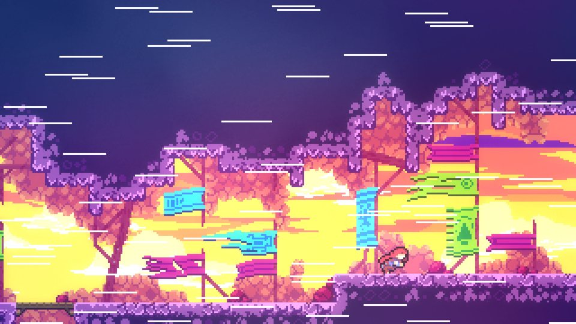
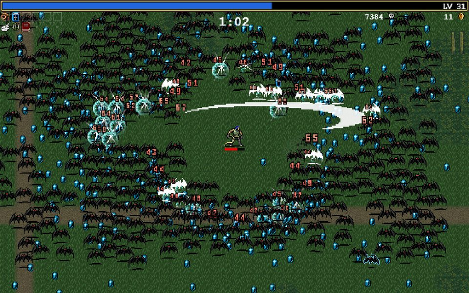
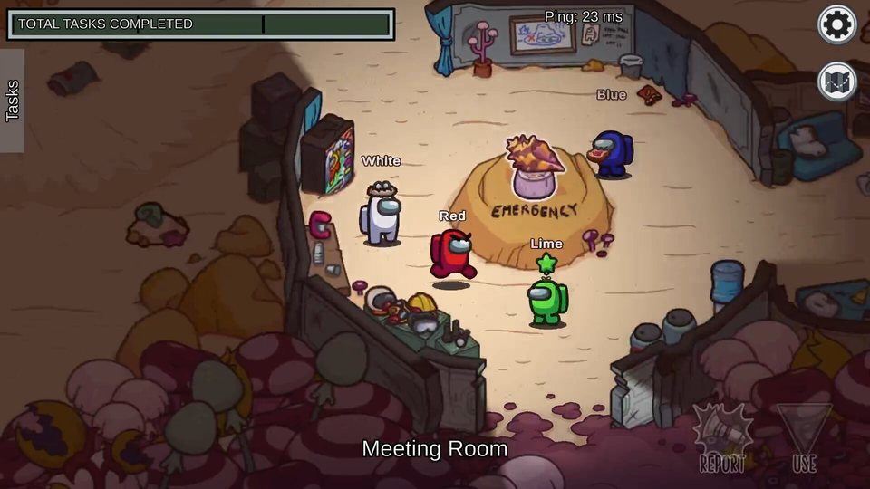
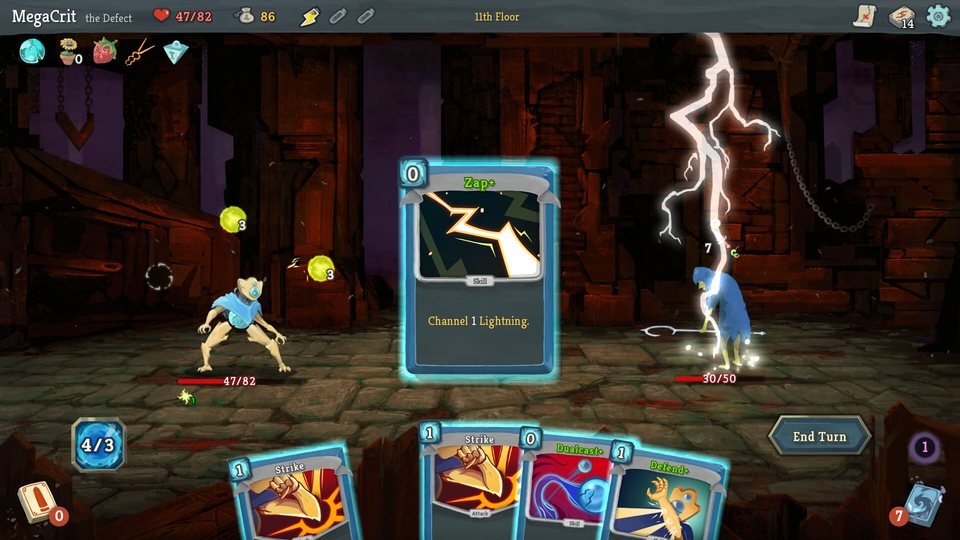
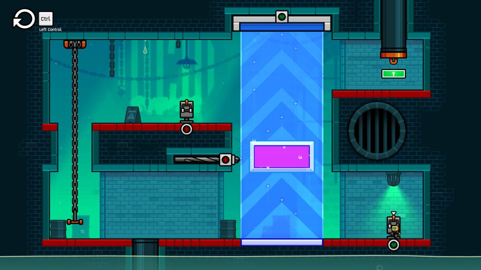
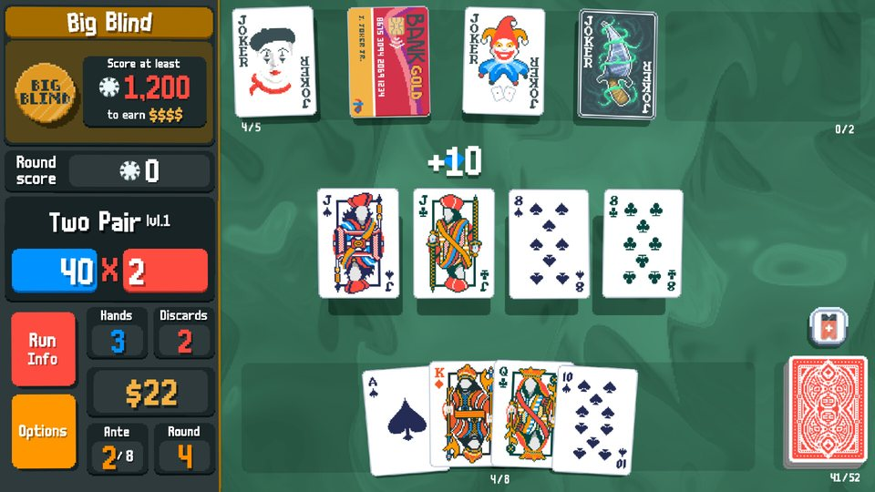
โครงการอบรมดิจิทัลคอนเทนต์และเกม
ขั้นตอนพัฒนาเกมตั้งแต่ต้นจนปล่อยให้คนเล่น เล่าผ่านเกมที่คุณรู้จัก: Celeste ที่เริ่มจาก 4 วัน · Vampire Survivors ที่เริ่มจากลิงก์ฟรีบน itch.io · Among Us ที่เกือบถูกหยุดก่อนจะดัง
แผนที่วันนี้
เกมที่ทุกคนรู้จัก: Flappy Bird · Celeste · Vampire Survivors · Balatro · Among Us · Mind Over Magnet และเกมที่ใช้เวลา 14 ปี จะเล่าทั้งที่สำเร็จและที่พัง
ก่อนเริ่ม
เปิดลิงก์บนจอ เล่นเกมไหนก็ได้ 1 เกมจนจบ 1 รอบ ไม่ต้องอ่านอะไร ไม่มีคนอธิบาย
ทั้ง 4 เกมเล่นฟรีบนเบราว์เซอร์ ไม่ต้องติดตั้ง · สอนออนไลน์: วางลิงก์ในแชทก่อนเริ่ม
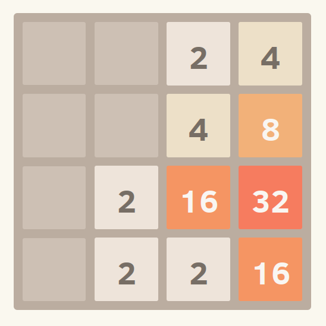
เว็บ · ฟรีplay2048.co · ปัดเลขให้รวมกัน รอบละ 1–3 นาที โค้ดเปิด (MIT) อ่านได้ทั้งเกม
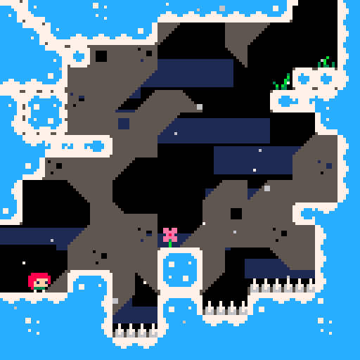
เว็บ · ฟรีlexaloffle.com/bbs (PICO-8) · เกม 4 วันที่กลายเป็น Celeste ลูกศร + กระโดด + dash
chrome://dino · กดเว้นวรรค เกมที่คนเล่นมากที่สุดในโลกโดยไม่ตั้งใจ รอบละ 20–60 วิ
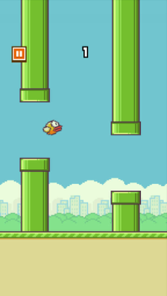
เว็บ · ฟรีflappybird.io · แตะนิ้วเดียว รอบละ 5–30 วิ ต้นแบบของเกม "ง่ายแต่หัวร้อน"
ขั้น 1 · ไอเดีย
แตะ → นกกระโดด ผ่านช่องท่อ +1 พร้อมเสียง "ติ๊ง" → อยากแตะอีกเพราะเพิ่งตายที่ 7 ทั้งที่สถิติคือ 9 ลูปนี้วนได้ทั้งรอบใน 10 วินาที ไม่ต้องมีเรื่องราวสักบรรทัด
เขียนลูปให้ได้ใน 1 ประโยค ที่มีคำว่า "แล้ว" และ "เพราะ": "ผู้เล่น ___ แล้วได้ ___ เพราะอยาก ___" ถ้าเขียนไม่ออก แปลว่ายังไม่ใช่เกม ยังเป็นแค่ฉากหรือตัวละคร
ขั้น 1 · ไอเดีย
มือถือแนวตั้ง · เบราว์เซอร์ · PC · คอนโซล คำตอบนี้กำหนดวิธีควบคุม ขนาดปุ่ม ความยาวรอบ และเครื่องมือที่ใช้ เปลี่ยนทีหลังแพงที่สุด
1 รอบกี่วินาที 1 วันกี่รอบ เกมบนเว็บและมือถือต้องสนุกภายใน 60–90 วินาทีแรก เพราะผู้เล่นตัดสินใจปิดหน้าภายในเวลานั้น
คนที่เล่นเกมอยู่แล้ว หรือคนที่ไม่เคยเล่น อายุเท่าไร เล่นตอนไหนของวัน ชื่อคนจริง 1 คนดีกว่ากลุ่มเป้าหมายกว้างๆ
ขั้น 2 · Pitch
เพราะคนอื่นจะอ่านจบ เพื่อนร่วมทีม อาจารย์ ผู้ให้ทุน ต่างอ่านหน้าเดียวแล้วบอกได้ทันทีว่าเข้าใจหรือไม่ และคุณจะเขียนเสร็จจริงภายในชั่วโมงเดียว
เรื่องราว ตัวละครทุกตัว ระบบเงิน อัปเกรด 40 แบบ ด่าน 60 ด่าน ทั้งหมดนี้รอได้ จนกว่า prototype จะบอกว่าลูปหลักสนุก
ขั้น 2 · Pitch · ตัวอย่างจริง
ปล่อยปี 2013 โดยนักพัฒนาคนเดียว ใช้เวลา 2–3 วัน ภาพน้อยกว่าเกมนักศึกษาส่วนใหญ่ แต่ลูปชัดใน 1 ประโยค
ขั้น 2 · Pitch · บทเรียนจากเกมจริง
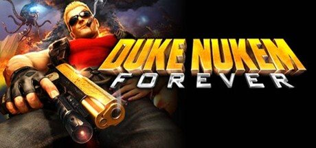
เคสที่ใช้ 14 ปีขั้น 3 · Prototype
Celeste Classic (2015): สี่เหลี่ยมไม่กี่สีบน PICO-8 ไม่มีเนื้อเรื่อง แต่ความรู้สึกตอนกระโดดและ dash ครบตั้งแต่วันที่ 4
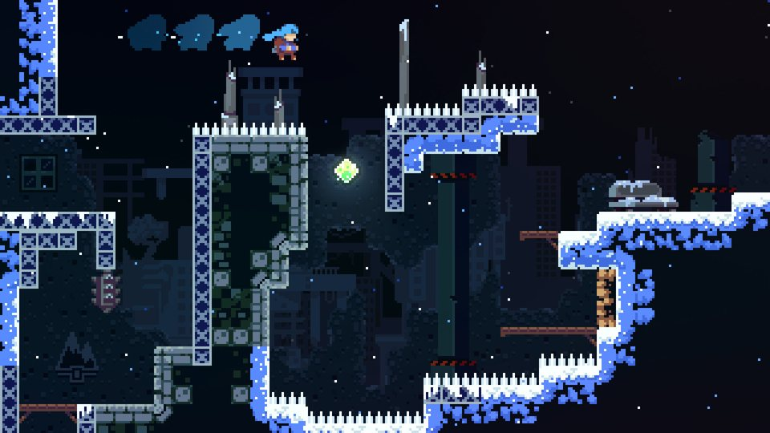
Celeste (2018): ภาพ เสียง และเนื้อเรื่องทั้งหมดใส่หลังจากกล่องเทาพิสูจน์แล้ว 3 ปี กลไกหลักยังเป็นชุดเดิม
ภาพสวยจะทำให้สนุกขึ้นอีก
ภาพสวยจะซ่อนปัญหาไว้ได้แค่ 30 วินาที
ห้ามเปิดโปรแกรมวาดภาพ จนกว่าจะมีคนเล่นกล่องเทาแล้วขอเล่นอีก
ขั้น 3 · Prototype · เครื่องมือ
| เครื่องมือ | เหมาะกับ | ข้อดี | ระวัง |
|---|---|---|---|
| HTML5 / Phaser / PixiJS | เกมเว็บ เกมมือถือผ่านเบราว์เซอร์ รอบสั้น | เปิดลิงก์เล่นได้ทันที ไม่ต้องติดตั้ง แชร์ง่าย ทีมเราใช้ทำมินิเกมทั้งหมด | เกม 3D หนักๆ ไม่เหมาะ |
| Godot | 2D และ 3D เบาถึงกลาง มือถือ/PC | ฟรี เปิดโค้ด เบา เรียนเร็ว export ได้ทั้งเว็บ มือถือ PC | ชุมชนเล็กกว่า Unity หาคำตอบยากกว่า |
| Unity | มือถือ PC คอนโซล ทั้ง 2D/3D | ตัวอย่างและปลั๊กอินมากที่สุด บริษัทเกมไทยใช้มากที่สุด | โปรเจกต์บวมง่าย ใบอนุญาตมีเงื่อนไขเมื่อมีรายได้ |
| Unreal | 3D คุณภาพสูง PC/คอนโซล | กราฟิกระดับสูงสุด Blueprint ไม่ต้องเขียนโค้ดมาก | หนัก เรียนนาน ไม่เหมาะกับเกมเล็กหรือเว็บ |
| กระดาษ + ดินสอ | เกมที่กติกาคือหัวใจ (การ์ด บอร์ด พัซเซิล) | prototype ได้ใน 1 ชั่วโมง ทดสอบกติกาก่อนเขียนโค้ด | ทดสอบ "ความรู้สึก" ของการควบคุมไม่ได้ |
กติกาเดียว: ถ้าคำตอบข้อ 1 คือ "เบราว์เซอร์" เลือกแถวแรก ถ้า "มือถือติดตั้ง" เลือก Godot หรือ Unity ไม่ต้องเรียนหลายตัว เรียนตัวเดียวให้ทำเกมเสร็จ
ขั้น 3 · Prototype · กติกา
คำถามจากช่อง "ความเสี่ยง" ใน pitch ไม่ใช่ทำเกมทั้งเกมแบบย่อ
ถ้าเกิน แปลว่าคำถามใหญ่ไป แบ่งคำถามให้เล็กลง
เขียนเร็ว เขียนสกปรก ไม่ต้องมีโครงสร้าง เพราะ 70% จะถูกเขียนใหม่ตอน production
สี่เหลี่ยม วงกลม เสียงฟรี ฟอนต์ระบบ เวลาทั้งหมดไปที่ "ความรู้สึกตอนเล่น"
ไม่ใช่วันสุดท้าย เพราะคุณจะเริ่มมองไม่เห็นปัญหาของตัวเองตั้งแต่วันที่ 4
Mark Brown บันทึกการทำเกมตั้งแต่ต้นจนปล่อยในซีรีส์ Developing บน YouTube · เปิด prototype แม่เหล็กให้ชุมชนเล่นตั้งแต่ตอนที่ 4 ตอนยังเป็นกล่องกับเส้น เพื่อเก็บ feedback ก่อนมีอาร์ต · ปล่อยเดโมบน itch.io ก่อนขายจริงบน Steam 13 พ.ย. 2024
ขั้น 4 · Playtest
ไม่ใช่เพื่อนร่วมทีม ไม่ใช่เพื่อนสนิท เพราะทั้งสองกลุ่มรู้ว่าเกมควรเล่นอย่างไรอยู่แล้ว หรือไม่กล้าบอกว่าไม่สนุก
หาได้จาก: เพื่อนของเพื่อน คนในโรงอาหาร ญาติที่ไม่เล่นเกม 5 คนพอ ที่จะเห็นปัญหาซ้ำกัน 80%
ขั้น 4 · Playtest · วัดอะไร
นับเวลาจากหน้าจอแรกจนเขาทำสิ่งที่ถูกต้องครั้งแรก เกินกว่านี้ = หน้าจอแรกต้องแก้ ไม่ใช่เพิ่มบทสอน
วางมือก่อนจบ = ความยาวรอบผิด หรือมีจุดที่ไม่รู้ว่าต้องทำอะไรต่อ หาจุดนั้นจากที่จดไว้
โดยไม่มีใครขอ นี่คือตัววัดเดียวที่โกหกไม่ได้ ถ้าไม่กด ถามว่าขาดอะไรถึงจะกด
การ์ดหลายร้อยใบ ทีม 2 คนสมดุลด้วยมือไม่ไหว จึงตั้งเซิร์ฟเวอร์เก็บข้อมูลทุกรันตั้งแต่ต้น: การ์ดไหนถูกเลือก ชนะกี่ % ตายชั้นไหน แล้วใช้ตัวเลขตอบทุกคำบ่น · คำเตือนจากทีมเอง: ผู้เล่นที่เล่นหนักผิดปกติทำค่าเฉลี่ยเพี้ยน ต้องแยกออกก่อนอ่าน
78% เข้าใจใน 3 วิ
61% เล่นจบรอบแรก
44% กดเล่นอีกเอง
ขั้น 4 · Playtest · ตัดสินใจ
ลูปหลักไม่สนุกแม้แก้ 2 รอบแล้ว · คนไม่กดเล่นอีก · ไม่ใช่ความล้มเหลว คือประหยัดเวลา 6 เดือน
Among Us 2: ประกาศแล้วยกเลิก ก.ย. 2020 เพื่อทุ่มคนทั้งหมดให้ภาคแรกที่กำลังดัง หยุดสิ่งที่ยังไม่พิสูจน์ ไปต่อกับสิ่งที่พิสูจน์แล้ว
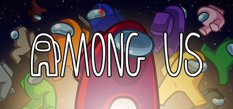
มีบางอย่างที่คนชอบ แต่ไม่ใช่สิ่งที่เราตั้งใจ · เก็บส่วนที่คนชอบ ทิ้งที่เหลือ · เขียน pitch ใหม่ 1 หน้า
Vampire Survivors: ปล่อยฟรีบน itch.io ปี 2021 แทบไม่มีคนสนใจ แต่คนที่เล่นแล้วเล่นนาน → ย้ายไปขายบน Steam ธ.ค. 2021 ด้วยภาพแทบเท่าเดิม
ผ่าน 3 ตัววัด · คนขอเล่นอีกเอง · ตอนนี้ถึงเวลาวาดภาพ ใส่เสียง และขยาย
Among Us: ยอดต่ำทั้งปี 2018 ทีมเกือบหยุดต้นปี 2019 แต่คนที่เล่นกลับมาเล่นซ้ำ จึงอัปเดตต่อ และระเบิดในปี 2020
สิ่งที่ห้ามทำ: "ปรับอีกนิดแล้วค่อยดู" ซ้ำเกิน 2 รอบโดยไม่เปลี่ยนคำถาม นั่นคือการหยุดที่ไม่ยอมรับว่าหยุด
ขั้น 5 · Production
กติกา ตัวเลข ด่าน UI flow · ต้องนำหน้าทุกสาย 1–2 สัปดาห์ เพราะอีก 3 สายรอสเปกจากตรงนี้
ตัวละคร ฉาก UI เอฟเฟกต์ · ใช้เวลานานที่สุด · เริ่มได้เมื่อ design ล็อก "ขนาด จำนวน สไตล์" แล้ว
ระบบเกม UI เซฟ · เริ่มจาก prototype ที่ผ่านแล้ว แต่เขียนใหม่ให้มีโครงสร้าง · ใช้ภาพชั่วคราวระหว่างรอ art
เสียงเอฟเฟกต์ เพลง · สายที่ถูกลืมบ่อยที่สุด แต่ใช้เวลาน้อยและเปลี่ยนความรู้สึกมาก · เริ่มได้ตั้งแต่กลางทาง
"งานนี้รออะไร" และ "งานนี้ปลดล็อกอะไร" ถ้าเขียน 2 คอลัมน์นี้ได้ครบ ลำดับงานจะออกมาเอง เครื่องมือ (Trello, Notion, กระดาษ) ไม่สำคัญ
1 คนทำ design + sound · 1 คน art · 1–2 คน code · ทุกคนเล่นเกมทุกวันศุกร์ด้วยกัน 15 นาที นี่คือ "ประชุม" ที่จำเป็นอย่างเดียว
ขั้น 5 · Production · ลำดับการสร้าง
เกมส่วนเล็กที่สุดที่มีทุกชั้นครบ: ภาพจริง เสียงจริง UI จริง 1 ด่าน 1 ศัตรู 1 ไอเทม เล่นได้ตั้งแต่เปิดจนจบรอบ
กระโดด · dash · ปีนกำแพง · ด่านสั้นหลายห้อง · หน้าจบ ทุกชั้นครบใน 4 วัน · ตัวเต็มปี 2018 เพิ่มจำนวนด่าน เนื้อเรื่อง ภาพ เสียง แต่กลไกหลักยังเป็นชุดเดิม
เวอร์ชันแรกบน itch.io มีตัวละครไม่กี่ตัว ด่านเดียว แต่ลูป "เดินหลบ เก็บเลเวล เลือกอาวุธ" ครบ คนที่เล่นแล้วติด คือหลักฐานพอให้ลงทุนต่อ
slice ที่สมบูรณ์ 1 ชิ้นบอกได้ว่าเกมเต็มต้องใช้แรงเท่าไร ก่อนตัดสินใจลงทุน 3 ปี
ขั้น 5 · Production · สิ่งที่ฆ่าเกมนักศึกษา
สัปดาห์ 3: "เพิ่มระบบอัปเกรดนิดหน่อย" · สัปดาห์ 5: "มีบอสด้วยดีไหม" · สัปดาห์ 7: "ต้องมีเนื้อเรื่องไม่งั้นไม่มีเหตุผล" · สัปดาห์ 9: ไม่มีอะไรเสร็จสักอย่าง และลูปหลักที่เคยสนุกตอน prototype กลับไม่สนุกแล้ว
Mind Over Magnet: ใกล้ปล่อย ผู้ทำเปลี่ยนแผนเพื่อลด asset และย่อเนื้อเรื่อง ให้ออกตรงวันครบรอบ 10 ปีของช่อง 13 พ.ย. 2024 · Stardew Valley: คนเดียวทำ 4 ปีกว่าเพราะขยายสโคปเรื่อยๆ ได้เกมดีแต่เป็นข้อยกเว้น ไม่ใช่แผนที่นักศึกษาควรเลียนแบบ
ขั้น 5 · Production · ทำเร็วได้อย่างไร
16 สี โค้ดจำกัด จอเดียว คนทำเกมเสร็จบนกรอบนี้เป็นพันเกม Celeste Classic คือหนึ่งในนั้น
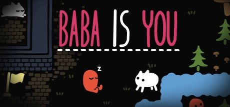
ธีมเดียว เวลาเดียว เกมเสร็จหลายพันเกมในสุดสัปดาห์เดียว เพราะกรอบตัดสินใจแทนไปแล้ว 80% · Baba Is You ก็เริ่มจาก Nordic Game Jam 2017
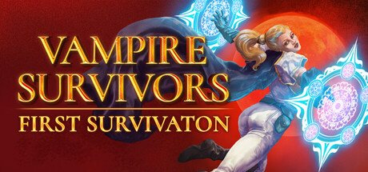
สร้างบนเฟรมเวิร์กเว็บฟรี ใช้ภาพซื้อสำเร็จ แรงทั้งหมดไปที่ลูป ขายได้หลายล้านชุดก่อนมีทีม
โครงหน้าเกม · หน้าจบรอบ · ระบบคะแนน · เสียงพื้นฐาน · ปุ่ม · ฟอนต์ · วิธีเซฟ ทำครั้งเดียว ใช้ทุกเกมถัดไป
ลูปหลัก 1 อย่าง · ภาพประกอบ 1 ชุด · เสียงเฉพาะ 3–5 เสียง นี่คือ 20% ของงาน แต่คือ 100% ของความต่าง
เกมที่ 2 ของคุณควรใช้โค้ด 60% จากเกมแรก ถ้าเริ่มจากศูนย์ทุกครั้ง จะไม่มีวันเร็วขึ้น
ขั้น 6 · Polish
ทั้ง 2 คลิปใช้เกมกล่องเทาเป็นตัวสาธิต เห็นชัดว่า juice ใส่หลังลูปเล่นได้แล้ว และใส่ได้ในวันเดียว
ขั้น 7 · ปล่อย
| ช่องทาง | เหมาะกับ | ขั้นตอน | ค่าใช้จ่าย |
|---|---|---|---|
| itch.io | เกมเว็บ (HTML5) และไฟล์ติดตั้ง PC · ที่ที่นักพัฒนาอินดี้ทั้งโลกปล่อยเกมแรก | สมัคร → อัปโหลด zip → ตั้งค่า "เล่นในเบราว์เซอร์" → ได้ลิงก์ใน 10 นาที | ฟรี |
| GitHub Pages | เกมเว็บที่มีซอร์สโค้ดใน GitHub อยู่แล้ว | push โค้ด → เปิด Pages → ได้ลิงก์ ชื่อผู้ใช้.github.io/ชื่อเกม · ทีมเราใช้วิธีนี้กับเอกสารและเดโม | ฟรี |
| Netlify / Vercel | เกมเว็บ อยากได้โดเมนสวยและอัปเดตอัตโนมัติ | ลากโฟลเดอร์วางในหน้าเว็บ → ได้ลิงก์ทันที | ฟรี (ระดับเริ่มต้น) |
| ไฟล์ .apk / .exe ส่งตรง | เกมมือถือ/PC ที่ยังไม่ขึ้น Store ให้กลุ่มทดสอบ | export → แชร์ผ่าน Drive/LINE · Android ต้องเปิด "ติดตั้งจากแหล่งที่ไม่รู้จัก" | ฟรี |
ภาพปก 1 · สกรีนช็อต 3 · คำอธิบาย 2 บรรทัด ที่บอกว่าทำอะไรและเล่นบนอะไร · ปุ่มเล่นที่เห็นทันที
เปิดลิงก์จากเครื่องอื่น มือถือคนอื่น เน็ตอื่น ถ้าเปิดได้แค่เครื่องตัวเอง ยังไม่นับว่าปล่อย
กลุ่ม 20–50 คนแรก: เพื่อน กลุ่มเฟซบุ๊กนักพัฒนาเกมไทย Discord ของ engine ที่ใช้ ขอ feedback ตรงๆ ไม่ขอให้ชม
ขั้น 7 · ปล่อย · หลังปล่อย
ใช้ Google Analytics ฟรี หรือส่ง 1 บรรทัดไป Google Sheet ก็พอ ไม่ต้องมีระบบใหญ่
ดูข้อมูล 3 วัน → แก้จุดเดียวที่คนออกมากที่สุด → ปล่อย 1.1 → ดูอีก 3 วัน วนแบบนี้ 3–4 รอบ เกมจะดีขึ้นมากกว่าที่คุณคิดเองได้ 3 เดือน
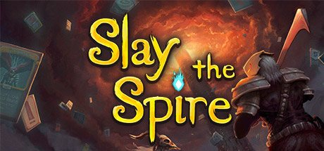
เก็บข้อมูลทุกรันตั้งแต่ early access (พ.ย. 2017) จนถึง 1.0 (ม.ค. 2019) ทุกแพตช์ปรับจากตัวเลขจริงว่าการ์ดไหนไม่มีใครเลือก ไม่ใช่จากความรู้สึกของทีม
หลังปล่อย · Portfolio
ลิงก์เดียว ไม่ต้องติดตั้ง ไม่ต้องอ่านคู่มือ · เปิดจากมือถือคนอื่นได้ (กติกาหน้า 20)
คนเล่นกี่คน เล่นจบกี่ % เล่นซ้ำไหม · ตัวเลขจาก 30 คน มีค่ากว่าคำว่า "สนุก" ที่เขียนเอง
งานกลุ่มเขียนให้ชัดว่าคุณทำอะไร (ลูป ด่าน โค้ด ภาพ เสียง) และตัดสินใจอะไรไป
post-mortem 10 บรรทัด: playtest เจออะไร แก้ยังไง · คนรับงานเชื่อคนที่เคยพังแล้วแก้ได้
ลิงก์เกม กดเล่นก่อนอ่านอะไรทั้งนั้น (3 นาที)
หน้าเกม / README รู้ไหมว่าตัวเองทำอะไรและทำไม
โค้ดหรือไฟล์งาน ดูวิธีจัดระเบียบ ไม่ได้ดูความฉลาด
เกรด ดูท้ายสุด และแทบไม่เปลี่ยนผล
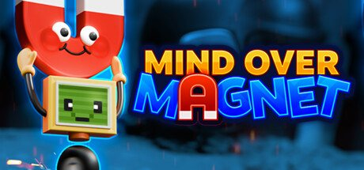
Mind Over Magnet ปล่อยเดโมบน itch.io ก่อนขายจริง · Vampire Survivors เวอร์ชัน itch.io คือ "เดโม" ที่ยังอยู่จนวันนี้ · กล่องเทาที่มีคนเล่นแล้ว + ตัวเลข = ชิ้นแรกของคุณ
หลังปล่อย · งานจริงเป็นอย่างไร
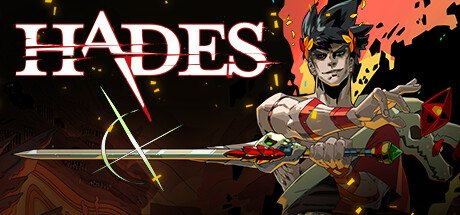
อยู่ใน early access ราว 2 ปี ปล่อยอัปเดตใหญ่ทุกสองสามเดือน ทีมเรียกแต่ละรอบว่า "การเปิดตัวเกมขนาดย่อ" และอ่านคำขอของผู้เล่นใน Discord ทุกข้อ
งานออกแบบไม่จบที่เอกสาร คือการแก้ซ้ำกับผู้เล่นจริงเป็นปี
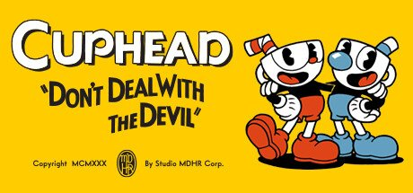
วาดมือลงกระดาษทุกเฟรม 24 ภาพต่อวินาที แบบการ์ตูนยุค 1930 สองพี่น้องผู้สร้างลาออกจากงานและจำนองบ้านเพื่อทำให้จบ
สไตล์ภาพคือการตัดสินใจเรื่องเวลาและเงิน ไม่ใช่แค่ความสวย
เขียนครั้งแรกด้วย Phaser เฟรมเวิร์กเว็บที่ทำได้เร็ว พอเกมพิสูจน์ตัวเองแล้ว จึงย้ายทั้งเกมไป engine ใหม่ในเวอร์ชัน 1.6 (ส.ค. 2023) ให้ลื่นขึ้นและพอร์ตง่ายขึ้น
โค้ดชุดแรกมีไว้พิสูจน์เกม เขียนใหม่ได้เมื่อเกมรอดแล้ว
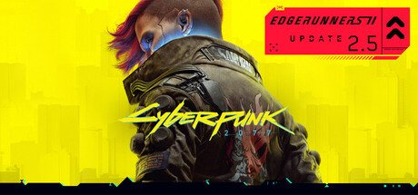
วางขาย ธ.ค. 2020 ขณะที่เวอร์ชันคอนโซลรุ่นเก่ายังค้างและบั๊กมาก ราว 1 สัปดาห์ต่อมา Sony ถอดเกมออกจาก PlayStation Store และคืนเงินเต็มจำนวน
บั๊กที่หลุดถึงมือผู้เล่น แพงกว่าเวลาที่ใช้ทดสอบเสมอ
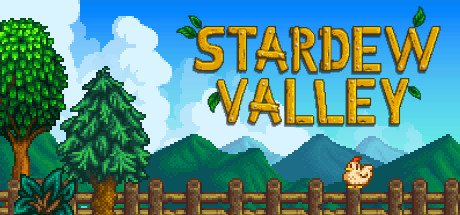
ทำคนเดียว 4 ปีครึ่ง ผู้สร้างประเมินเองว่าทำราว 10 ชั่วโมงต่อวัน ทุกวัน เป็นการทำงานหนักที่ไม่มีใครสั่ง และไม่มีใครช่วยตัดสโคป
งาน Production มีไว้เพื่อให้เกมเสร็จโดยไม่ต้องแลกกับชีวิตคนทำ
ทั้ง 5 เรื่องมาจากบทสัมภาษณ์และข่าวที่เปิดเผยต่อสาธารณะ · งานประจำวันในสตูดิโอส่วนใหญ่ไม่หนักขนาดนี้ แต่ปัญหาเป็นชนิดเดียวกัน
วิเคราะห์เกม · อ่านเกมคนอื่นให้ออก
| รีวิว | วิเคราะห์ | |
|---|---|---|
| คำถาม | สนุกไหม ควรเล่นไหม | ทำไมถึงสนุก ผู้สร้างตัดสินใจอะไร และแลกกับอะไร |
| หลักฐาน | ความรู้สึกของฉัน | สิ่งที่เกิดบนจอ นับได้ จับเวลาได้ คนอื่นเปิดเกมแล้วเห็นตรงกัน |
| ผลลัพธ์ | คะแนน คำแนะนำ | ข้อที่นำไปใช้กับเกมของตัวเองได้ และข้อที่ใช้ไม่ได้ |
| ตัวอย่าง | "Flappy Bird ยากแต่เพลิน เล่นแล้ววางไม่ลง" | "Flappy Bird ตายแล้วเริ่มรอบใหม่ได้ทันที ไม่มีหน้าโหลด ไม่เสียอะไร คนจึงกดเล่นซ้ำ" |
คนทำเกมวิเคราะห์เกมของคนอื่นเป็นประจำ เพื่อไม่ต้องลองผิดซ้ำในเรื่องที่มีคนพิสูจน์ให้ดูแล้ว
สังเกต เล่นแล้วจดสิ่งที่เกิดขึ้น ยังไม่ตีความ (3 ข้อจากหน้า 3 คือจุดเริ่ม)
ตีความ ผู้สร้างเลือกแบบนี้เพราะอะไร และยอมเสียอะไรไป
นำไปใช้ ข้อไหนใช้กับเกมของเราได้ ข้อไหนไม่ได้ เพราะอะไร
วิเคราะห์เกม · กรอบ MDA
สิ่งที่ผู้สร้างเขียนลงไปตรงๆ: ปุ่ม กฎ ตัวเลข เงื่อนไขแพ้ชนะ · คือคำตอบของ 3 คำถามในหน้า 5
สิ่งที่เกิดขึ้นเมื่อคนเล่นกติกานั้นจริง: กลยุทธ์ จังหวะ จุดที่พลาดซ้ำ · เห็นได้ตอน playtest เท่านั้น (หน้า 12)
อารมณ์ที่ผู้เล่นได้กลับไป: ท้าทาย ค้นพบ ได้อยู่กับเพื่อน · คือเหตุผลที่เขากดเล่นอีก (หน้า 13)
ผู้สร้างแก้ได้แค่ M แล้วหวังให้เกิด D และ A · ผู้เล่นรู้สึก A ก่อน แล้วค่อยเห็น D และ M · คนวิเคราะห์เดินย้อน: เริ่มจากความรู้สึก ถามว่าพฤติกรรมไหนทำให้รู้สึกแบบนั้น แล้วกติกาข้อไหนทำให้เกิดพฤติกรรมนั้น
Sensation · Fantasy · Narrative · Challenge · Fellowship · Discovery · Expression · Submission
แต่ละเกมเน้นไม่เท่ากัน บอกให้ได้ว่าเกมที่วิเคราะห์เด่นแบบไหน
ที่มา: Hunicke, LeBlanc, Zubek (2004) "MDA: A Formal Approach to Game Design and Game Research" · อ่านฟรี 5 หน้า ใช้อ้างอิงในรายงานได้
วิเคราะห์เกม · ตัวอย่าง 1 หน้า
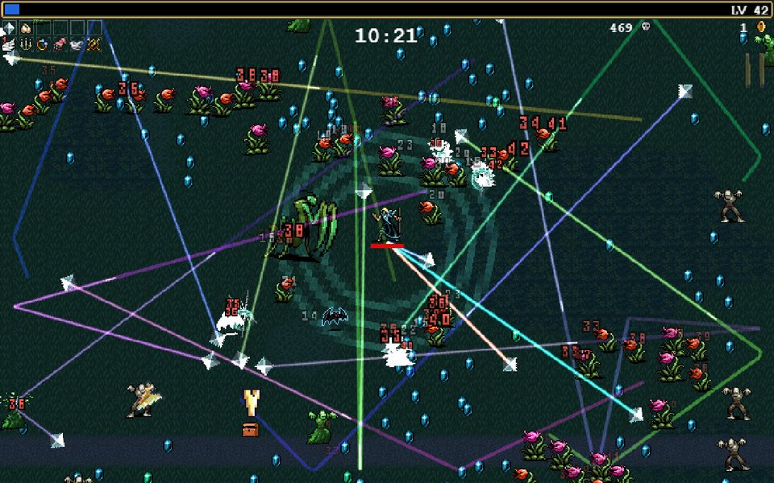
ปลายรอบ| ชั้น | สิ่งที่เห็นในเกม (หลักฐาน) | ตีความ: ผู้สร้างตัดสินใจอะไร |
|---|---|---|
| M · กติกา | ผู้เล่นทำได้แค่เดิน อาวุธยิงเองทั้งหมด · เก็บอัญมณีเพื่อขึ้นเลเวล · ทุกเลเวลเลือกอัปเกรด 1 อย่างจาก 3–4 ตัวเลือก · รอบมีเวลาจำกัด สูงสุด 30 นาที | ตัดปุ่มโจมตีและการเล็งทิ้ง เหลือการตัดสินใจ 2 เรื่อง: เดินไปทางไหน และเลือกอะไร |
| D · พฤติกรรม | ต้นรอบต้องหนีศัตรู ปลายรอบศัตรูเต็มจอแต่ล้มเป็นแถบ · ผู้เล่นทดลองจับคู่อาวุธกับไอเทมเพื่อให้อาวุธวิวัฒน์ | ความเก่งมาจากการเลือก ไม่ใช่ความเร็วมือ คนที่ไม่ถนัดเกมแอ็กชันก็ชนะได้ |
| A · ความรู้สึก | รู้สึกแข็งแกร่งขึ้นเรื่อยๆ ในรอบเดียว · จบรอบแล้วอยากลองชุดอาวุธใหม่ | เด่นที่ Discovery และ Challenge · ตรงกับตัววัด "กดเล่นอีกเอง" (หน้า 13) |
| สิ่งที่ตัดออก | ไม่มีเนื้อเรื่อง · ภาพพิกเซลเรียบง่าย · ตอนเปิดตัวเล่นได้คนเดียว (โหมดเล่นหลายคนเพิ่มทีหลังในปี 2023) | สโคปที่คน 1 คนทำจบได้ ของที่เหลือรอจนเกมพิสูจน์ตัวเองแล้ว (หน้า 17–18) |
ใช้ได้: ตัดให้เหลือการกระทำเดียว · ให้ผู้เล่นได้ "เลือก" อย่างน้อย 1 ครั้งต่อรอบ · ใช้ไม่ได้: รอบ 30 นาทีไม่เหมาะกับคนรอคิว ต้องย่อความรู้สึก "แข็งแกร่งขึ้น" ให้เกิดใน 60 วินาที
รูปแบบนี้ใช้วิเคราะห์เกมไหนก็ได้: ตาราง 4 แถว + ข้อที่นำไปใช้และไม่นำไปใช้ ยาวไม่เกิน 1 หน้า
กิจกรรมกลุ่ม
มอง pitch ของกลุ่มด้วย MDA (หน้า 24–26): กติกาคืออะไร และอยากให้ผู้เล่นรู้สึกอะไร
ปิดท้าย
เกมที่เสร็จใน 3 สัปดาห์ ชนะเกมที่ "เกือบเสร็จ" มา 3 ปี · pitch 1 หน้า · ลูป 1 ประโยค · ความเสี่ยง 1 ข้อ
กล่องเทาภายใน 2 สัปดาห์ · คนแปลกหน้า 5 คน · วัด 3 อย่าง · แล้วกล้าเลือก หยุด / เปลี่ยน / ไปต่อ
ลิงก์ที่คนอื่นเปิดได้คือ "ปล่อย" · 1.0 คือจุดเริ่ม · ตัดฟีเจอร์ ไม่เลื่อนวัน
เครื่องมือจะเปลี่ยนทุก 3 ปี แต่ 7 ขั้นนี้เหมือนเดิมมา 30 ปี
ไปต่อด้วยตัวเอง
Game Jam ที่ใกล้ที่สุด (Global Game Jam ทุกเดือนมกราคม · Ludum Dare ปีละ 2 ครั้ง) การทำเกมจบใน 48 ชั่วโมงคือการเรียน 7 ขั้นนี้แบบอัดแน่นที่สุด
ภาคผนวก · สำหรับอาจารย์ผู้รับผิดชอบหลักสูตร (ไม่บรรยาย)
| # | ข้อเสนอ | เหตุผลจากการรับคนจริง | ทำได้ทันทีโดย |
|---|---|---|---|
| 1 | วิชาเกมที่มีชั่วโมงปฏิบัติ จบด้วยเกมที่เล่นได้บนลิงก์ คู่กับรายงาน | ตอนคัดคนเราเปิดลิงก์ก่อนอ่านเอกสาร นักศึกษาส่วนใหญ่มีรายงานแต่ไม่มีลิงก์ | กำหนดส่งงานเป็น URL itch.io / GitHub Pages + สกรีนช็อต 3 ภาพ |
| 2 | Playtest กับคนนอกกลุ่ม เป็นส่วนหนึ่งของคะแนนตั้งแต่ปี 2 | ทักษะที่ขาดมากที่สุดคือรับ feedback จากคนแปลกหน้าแล้วแก้ ไม่ใช่เขียนโค้ด | ให้คะแนน "บันทึก playtest 5 คน + สิ่งที่แก้" 20% ของงาน |
| 3 | สอน pitch 1 หน้าและการตัดสโคป ก่อนสอน engine | โปรเจกต์นักศึกษาล้มเพราะใหญ่เกิน ไม่ใช่เพราะเครื่องมือ | 1 คาบ: แบบฟอร์ม 6 ช่อง (หน้า 6) + กติกา kill / pivot / go (หน้า 14) |
| 4 | ใช้ engine ที่ปล่อยบนเว็บได้ (Godot / Phaser / Unity WebGL) เป็นค่าตั้งต้น | เกมเว็บคือสิ่งที่สตูดิโอไทยหลายแห่งรวมถึงเราทำอยู่จริง และนักศึกษาปล่อยเองได้ฟรี | ไม่ต้องเปลี่ยนวิชา แค่กำหนด target เป็น HTML5 build |
ยินดีให้ข้อมูลเพิ่มเติมสำหรับการพัฒนาหลักสูตร (วัตถุประสงค์ข้อ 4 ของโครงการ) · ติดต่อผ่านอาจารย์ผู้ประสานงาน